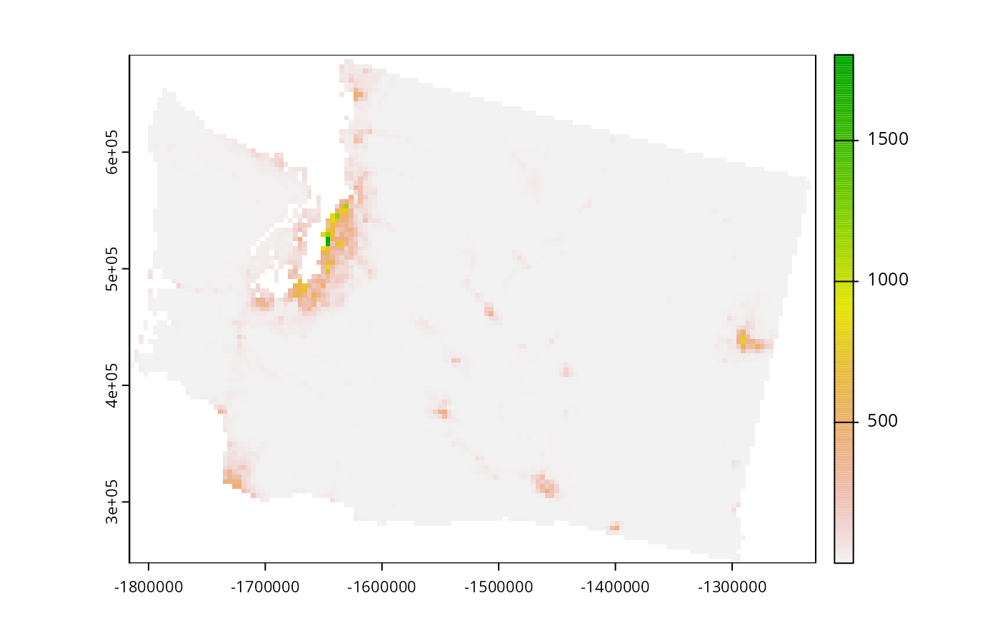
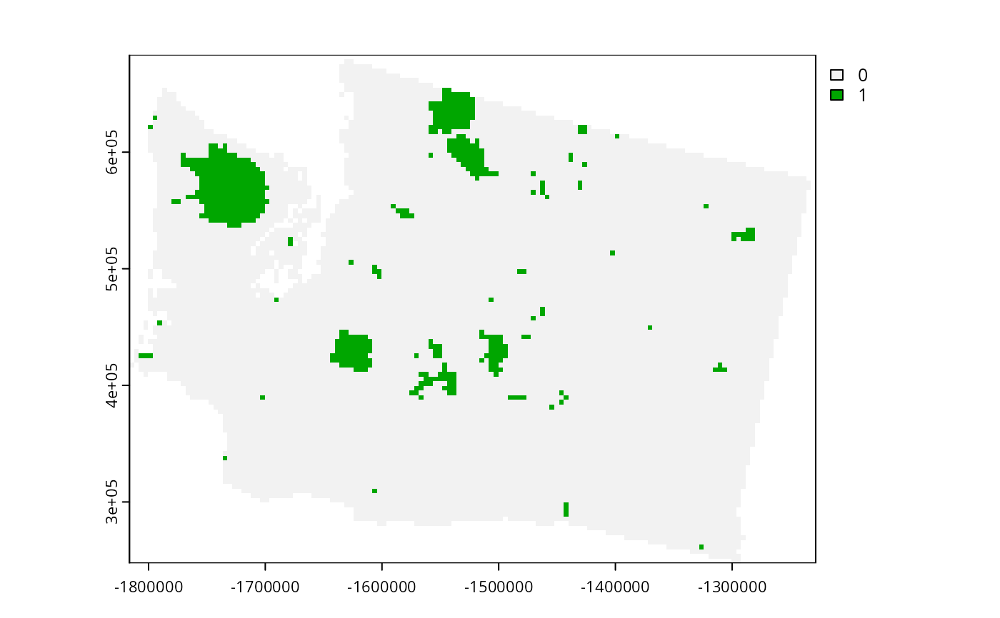
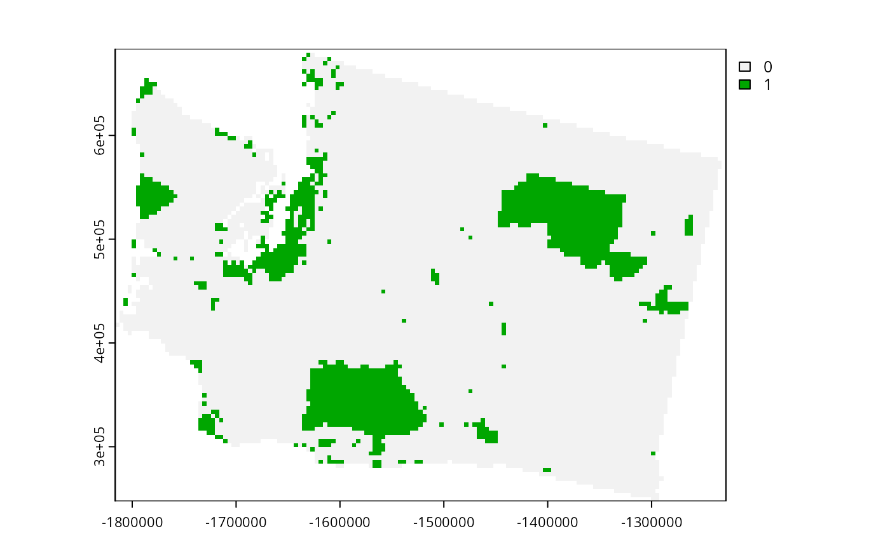

Conservation planning dataset for Washington, The United States of America.
get_wa_pu()
get_wa_locked_in()
get_wa_locked_out()
get_wa_features()terra::rast() object.
terra::rast() object.
terra::rast() object.
terra::rast() object.
The following functions are provided to import data:
get_wa_pu()Import planning unit data.
The planning units are a single layer terra::rast() object.
Cell values denote land acquisition costs.
These data were originally obtained from Nolte (2020 a,b).
get_wa_locked_in()Import locked in data.
The locked in data are a single layer terra::rast() object.
Cell values denote binary values indicating if each cell
is predominantly covered by protected areas
(excluding those with no mandate for biodiversity protection).
These data were originally obtained from USGS (2022)
get_wa_locked_in()Import locked out data.
The locked out are a single layer terra::rast() object.
Cell values denote binary values indicating if each cell
is predominantly covered by urban areas.
These data were originally obtained from the
Commission for Environmental Cooperation (2020)
get_wa_features()Import biodiversity feature data.
The feature data are a multi-layer
terra::rast() object object.
It contains the spatial distribution of 258 bird species.
To account for migratory patterns, data are provided for the
breeding and non-breeding distributions of species
(indicated by "breeding" and "non-breedig" in the layer names).
If a species is lacking such information,
then the species is denoted with its full distribution
(as indicated "full" in the layer names).
These data were originally obtained from the eBird Status and Trends
dataset (Fink et al. 2020).
Commission for Environmental Cooperation. (2020). 2015 Land Cover of North America at 30 Meters. North American Land Change Monitoring System, 2nd Edition, http://www.cec.org/north-american-environmental-atlas/land-cover-30m-2015-landsat-and-rapideye/.
Fink D, Auer T, Johnston A, Ruiz-Gutierrez V, Hochachka WM and Kelling S (2020) Modeling avian full annual cycle distribution and population trends with citizen science data. Ecological Applications, 30: e02056.
Nolte C (2020a) Data for: High-resolution land value maps reveal underestimation of conservation costs in the United States. Dryad, Dataset, https://doi.org/10.5061/dryad.np5hqbzq9.
Nolte C (2020b) High-resolution land value maps reveal underestimation of conservation costs in the United States. Proceedings of the National Academy of Sciences, 117: 29577--29583.
U.S. Geological Survey (USGS) Gap Analysis Project (GAP) (2022) Protected Areas Database of the United States (PAD-US) 3.0: U.S. Geological Survey data release, https://doi.org/10.5066/P9Q9LQ4B.
# load packages
library(terra)
# import data
wa_pu <- get_wa_pu()
wa_features <- get_wa_features()
wa_locked_in <- get_wa_locked_in()
wa_locked_out <- get_wa_locked_out()
# preview planning units
print(wa_pu)
#> class : SpatRaster
#> dimensions : 109, 147, 1 (nrow, ncol, nlyr)
#> resolution : 4000, 4000 (x, y)
#> extent : -1816382, -1228382, 247483.5, 683483.5 (xmin, xmax, ymin, ymax)
#> coord. ref. : +proj=laea +lat_0=45 +lon_0=-100 +x_0=0 +y_0=0 +ellps=sphere +units=m +no_defs
#> source : wa_pu.tif
#> name : cost
#> min value : 0.2986647
#> max value : 1804.1838379
plot(wa_pu)

# preview locked in
print(wa_locked_in)
#> class : SpatRaster
#> dimensions : 109, 147, 1 (nrow, ncol, nlyr)
#> resolution : 4000, 4000 (x, y)
#> extent : -1816382, -1228382, 247483.5, 683483.5 (xmin, xmax, ymin, ymax)
#> coord. ref. : +proj=laea +lat_0=45 +lon_0=-100 +x_0=0 +y_0=0 +ellps=sphere +units=m +no_defs
#> source : wa_locked_in.tif
#> name : protected areas
#> min value : 0
#> max value : 1
plot(wa_locked_in)

# preview locked out
print(wa_locked_out)
#> class : SpatRaster
#> dimensions : 109, 147, 1 (nrow, ncol, nlyr)
#> resolution : 4000, 4000 (x, y)
#> extent : -1816382, -1228382, 247483.5, 683483.5 (xmin, xmax, ymin, ymax)
#> coord. ref. : +proj=laea +lat_0=45 +lon_0=-100 +x_0=0 +y_0=0 +ellps=sphere +units=m +no_defs
#> source : wa_locked_out.tif
#> name : urban areas
#> min value : 0
#> max value : 1
plot(wa_locked_out)

# preview features
print(wa_features)
#> class : SpatRaster
#> dimensions : 109, 147, 396 (nrow, ncol, nlyr)
#> resolution : 4000, 4000 (x, y)
#> extent : -1816382, -1228382, 247483.5, 683483.5 (xmin, xmax, ymin, ymax)
#> coord. ref. : +proj=laea +lat_0=45 +lon_0=-100 +x_0=0 +y_0=0 +ellps=sphere +units=m +no_defs
#> source : wa_features.tif
#> names : Recur~ding), Botau~ding), Botau~ding), Corvu~ding), Corvu~ding), Cincl~full), ...
#> min values : 0.000, 0.000, 0.000, 0.000, 0.000, 0.00, ...
#> max values : 0.514, 0.812, 3.129, 0.115, 0.296, 0.06, ...
plot(wa_features)